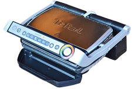
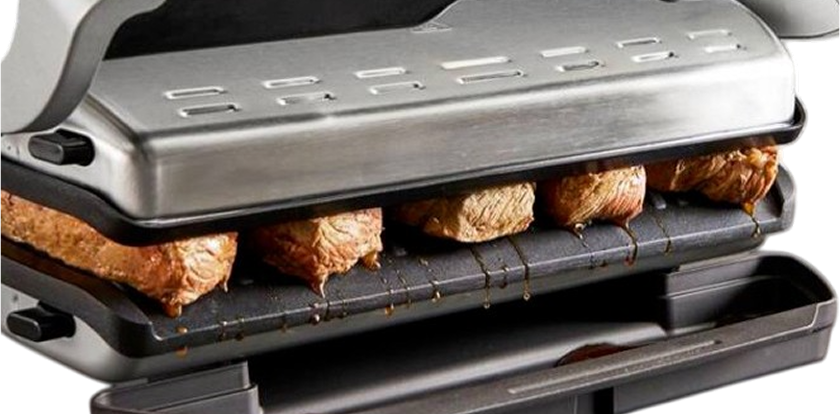

Инструкция по эксплуатации TEFAL OptiGrill+ GC712D34
Tefal Optigrill+
GC712D34
Tefal Optigrill лёгкий: он весит 4,65 кг. Корпус гриля сделан из нержавеющей стали, благодаря чему он долго прослужит на вашей кухне. А ещё его легко держать в чистоте: съёмные пластины и поддон можно мыть руками или в посудомоечной машине.

